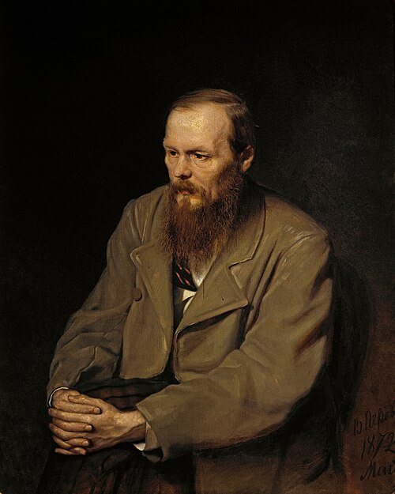

Fjodor Dostojevski
Ajatus joutuu koetukselle toisen ihmisen edessä.
Dostojevskin henkilöt väittelevät itsensä ja toistensa kanssa. Suuret moraaliset kysymykset muuttuvat teoiksi, joilla on hinta.
Etsi teokset kirjastostaElämä ja teokset
Fjodor Dostojevski syntyi Moskovassa ja kouluttautui insinööriksi. Hän siirtyi kirjallisuuden pariin, ja esikoisromaani Köyhää väkeä toi hänet Pietarin kirjallisiin piireihin. Vuonna 1849 pidätys johti kuolemantuomioon, joka muutettiin pakkotyöksi Siperiassa.
Vankeuden ja sotilaspalveluksen jälkeen Dostojevski palasi kirjoittamiseen ja lehtityöhön. Hänen myöhempään tuotantoonsa kuuluvat Rikos ja rangaistus, Idiootti ja Karamazovin veljekset. Hän kuoli Pietarissa vuonna 1881.
Tyyli ja teemat
Kuumeinen sisäinen puhe ja pitkät kohtaamiset tekevät ajatuksista dramaattisia. Henkilö voi perustella tekonsa taitavasti ja silti horjua toisen ihmisen läsnäolosta. Köyhyys, häpeä ja myötätunto sitovat filosofian konkreettiseen kaupunkielämään.
Vastuu · Syyllisyys · Myötätunto
Aloita tästä
Rikos ja rangaistus
Raskolnikov yrittää oikeuttaa rikoksen teorialla poikkeusihmisestä. Pietarin kaduilla ajatus törmää pelkoon, syyllisyyteen ja toisten ihmisten vaatimuksiin.
Karamazovin veljekset
Isän ja veljesten ristiriidat kärjistyvät murhaksi. Romaani kysyy, mitä usko, vapaus ja moraalinen vastuu merkitsevät.
Kuuntele, miten henkilön varmuus muuttuu kesken puheen. Selitys ei aina paljasta koko motiivia.